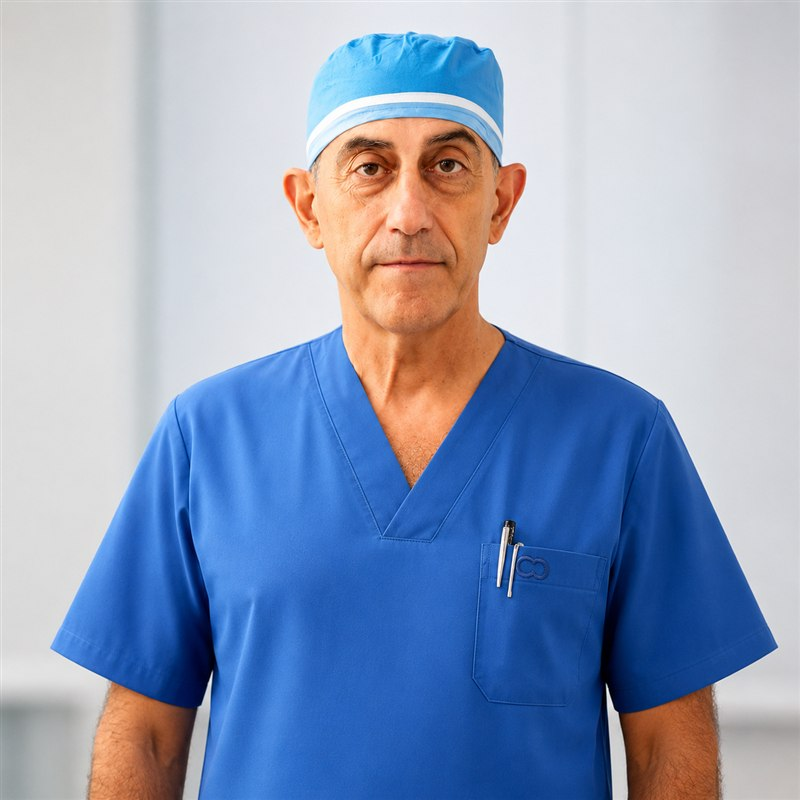
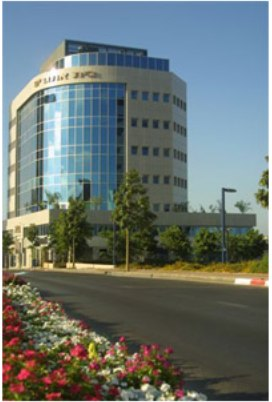

Dr. Moris Topaz
Over four decades of surgical excellence, groundbreaking medical research and teaching across six continents. Every patient receives a precise diagnosis, a personal treatment plan and the close, personal attention of Dr. Topaz himself, from the first consultation through full recovery.

Precise medicine, personal care
Deep experience in both aesthetic and reconstructive surgery gives Dr. Topaz a rare ability: combining a refined aesthetic result with uncompromising medical safety.
Aesthetic Surgery
Eyelid surgery, rhinoplasty, facial rejuvenation and breast surgery: augmentation, reduction and lift. Personal planning tailored to your anatomy and expectations.
Learn more →Reconstructive Surgery
Breast reconstruction, excision and reconstruction of skin tumors, scar revision and repair of congenital and acquired defects, with attention to both function and appearance.
Learn more →Complex & Hard-to-Heal Wounds
An international authority on the closure of hard-to-heal wounds, post-cardiac-surgery infections and salvage of infected cardiac implants, using technologies he invented.
Learn more →A pressure ulcer or diabetic foot wound that will not heal? There is another way
Many patients are discharged home with dressings and ointments only, while the wound slowly worsens, sometimes to the point of amputation risk. It is exactly for these cases that Dr. Topaz developed his treatment approach. A bedside consultation can also be arranged at the hospital.
Gradual Closure Instead of Waiting
The TopClosure® system invented by Dr. Topaz stretches the skin gradually and closes wounds that are routinely managed for months with dressings, in many cases without major surgery and without skin grafts.
A Portable Vacuum System, at Home Too
When needed, the wound is connected to negative pressure therapy through a light, portable system, allowing healing to continue at home, without prolonged hospitalization.
Limb Salvage
Early closure of diabetic ulcers and pressure wounds reduces infection and may prevent amputation. The approach is published in the professional literature and applied in hospitals in Israel and worldwide.

Surgeon, scientist, inventor and educator
Dr. Topaz is a graduate of the Ben-Gurion University Faculty of Medicine, holds a Master's degree Cum Laude from Tel-Aviv University and a Ph.D. in science. He trained in plastic surgery at the Chaim Sheba Medical Center (Tel Hashomer) and completed a fellowship in plastic and reconstructive surgery in the United States.
For 26 years he headed the Plastic Surgery Unit at the Hillel Yaffe Medical Center. Today he operates as a senior volunteer surgeon at Israel's leading hospitals: Sheba, Ichilov, Hillel Yaffe and Shaare Zedek, alongside his private clinic in Ra'anana and surgical work at Herzliya Medical Center and Assuta.
- Founder and Chairperson of the International Breast Implant Registry (IBIR)
- Former Secretary-General of IQUAM and Executive Committee member of IPRAS
- Visiting Professor at university hospitals in China and senior lecturer at Bar-Ilan University
The technologies he invented serve surgeons worldwide
Dr. Topaz does not merely apply the frontier of medicine, he helps write it: the wound closure systems he invented are in clinical use in many countries and have been reviewed in the international professional literature.
TopClosure®
A revolutionary system for closing high-tension wounds, harnessing the viscoelastic properties of the skin to achieve primary closure of wounds that once required grafts and flaps.
Regulated Negative Pressure Therapy
The RO-NPT method combines oxygen enrichment and continuous irrigation under regulated negative pressure, treating infected and hard-to-heal wounds, including trauma and mass-casualty scenarios.
Salvage of Infected Cardiac Implants
A unique conservative approach to preserving infected pacemakers and implanted defibrillators, sparing patients dangerous and costly replacement surgery.
A sought-after speaker on the world stage
From the University of Hong Kong to New Delhi, from IPRAS world congresses to leading hospitals across China: Dr. Topaz lectures regularly on the closure of hard-to-heal wounds and on the management of wound infections.
Lectures and keynotes can be booked for medical conferences, hospitals, academic institutions and industry events.
Lecture Topics & BookingThe recognition of the medical world
Dr. Topaz is a recipient of China's Friendship Award (2009), the highest honor the People's Republic of China bestows on foreign experts, for his contribution to advancing wound care medicine.
Dr. Topaz volunteered to treat casualties of the devastating earthquake in Sichuan Province, and received recognition from the Premier of China. On his initiative, a first-of-its-kind sister-hospital agreement was signed between Israel and China.
The TopClosure® system invented by Dr. Topaz was reviewed by the UK's National Institute for Health and Care Excellence (NICE) and is presented in international publications as one of the leading Israeli inventions in wound care.
You are invited to a personal consultation
The clinic is open Tuesday and Thursday, 17:00-21:00, at 16 HaTidhar St. (Etgarim House), Ra'anana, Israel.